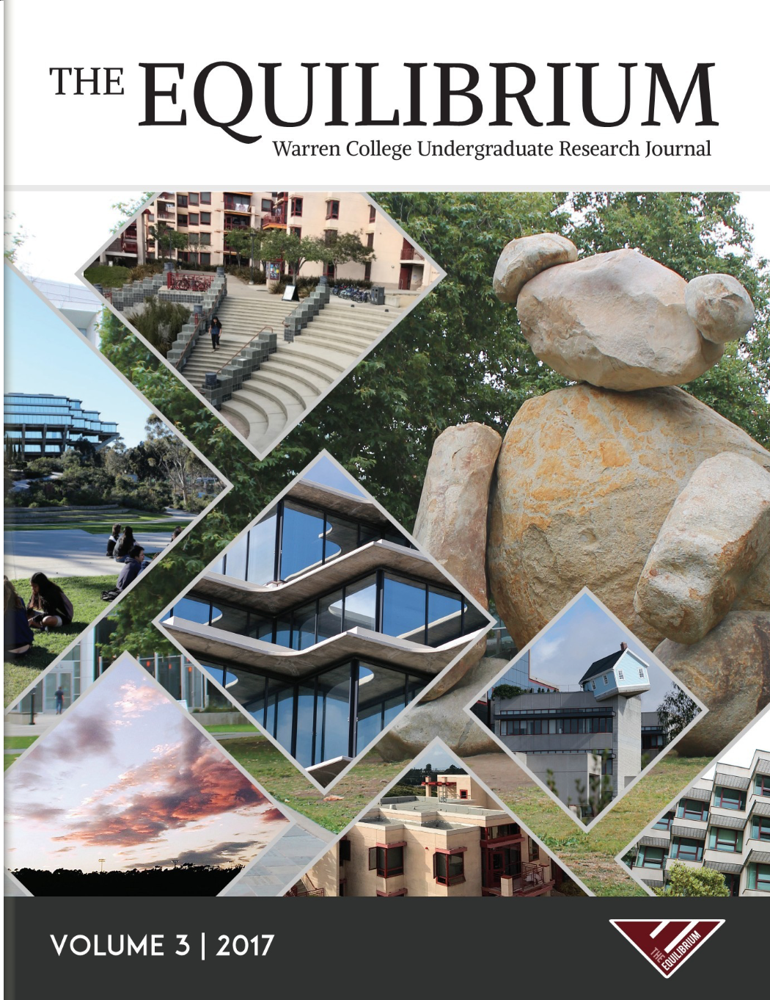
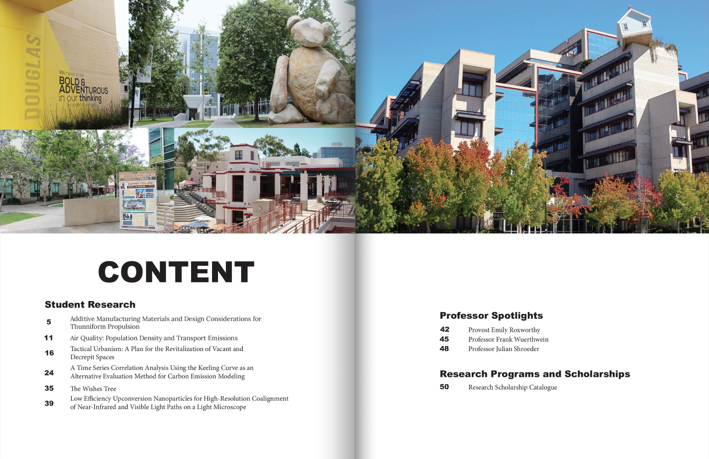
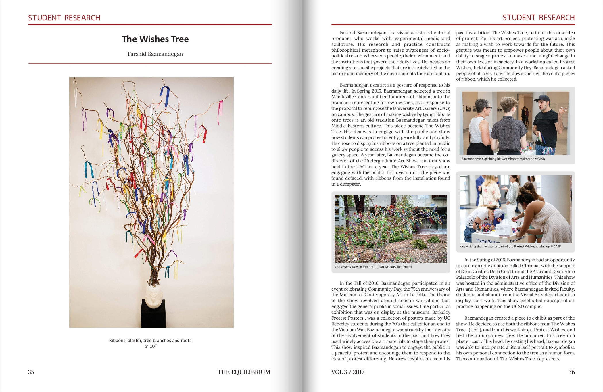
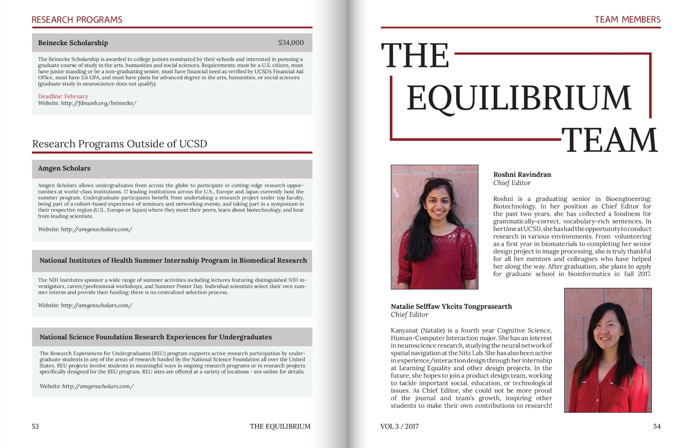

The Equilibrium, Volume III
Role: Design Editor
Tool: Adobe InDesign
The Equilibrium is a relatively new interdisciplinary research journal organization established at Warren College in UC San Diego. As a design editor, I wanted to make a professional and consistent journal that clearly represents and supports all types of researches.


